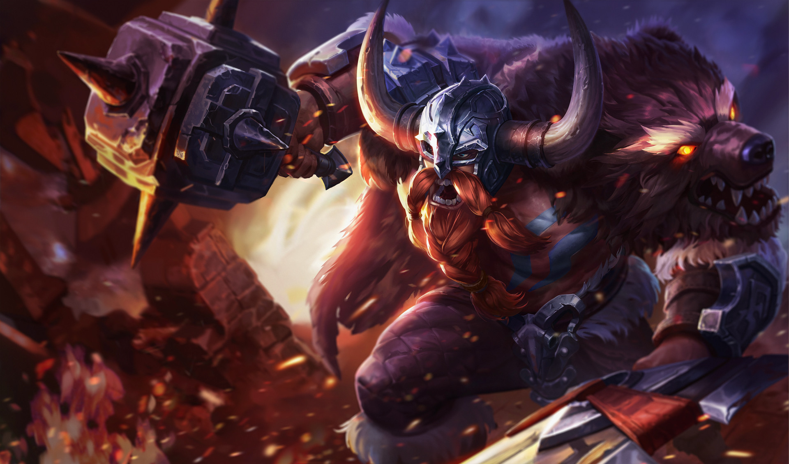

ORMARR
Tiểu sử
"Thử đánh bại ta xem nào!"
Sinh ra trong bộ lạc Huyết Phủ, Ormarr sở hữu sức mạnh phi thường và sức chịu đựng dẻo dai. Với cây búa khổng lồ và thanh kiếm của mình, Ormarr xung phong tham chiến không biết bao nhiêu trận đánh của bộ tộc của mình với. Gã luôn là người xung phong đầu tiên và rút lui cuối cùng. Trước sự bất khuất, gan dạ, quả cảm đó, Ormarr nhận được sự kính nể của cả đồng minh lẫn kẻ thù. Biệt danh “Cuồng Chiến Binh” cũng bắt đầu từ đây.
Nhận được sự tín nhiệm của nhiều người trong bộ tộc, Ormarr trở thành đầu lĩnh. Nhưng trong quá trình lãnh đạo, gã có nhiều quyết định sai lầm, mà nổi bật trong đó là việc cố gắng cướp kho lương thực dự trữ của đồng minh. Điều này đã khiến bộ tộc của gã bị trục xuất đến vùng đất băng giá phương Bắc xa xôi. Điều kì lạ là điều này lại không hề làm ảnh hưởng đến danh tiếng của Ormarr. Mọi người trong bộ tộc vẫn nhất nhất nghe theo Ormarr, điều này luôn thôi thúc gã phải cố gắng nhiều hơn nữa.
Không làm mọi người trong bộ tộc thất vọng, khi đội quân quỷ dữ xâm lược lục địa, Ormarr đã dẫn đầu đội quân để bảo vệ bộ tộc của mình. Cảm phục trước tinh thần quả cảm, vì bộ tộc quên thân đó, những bộ tộc lân cận nhanh chóng cho người chi viện vật tư, quân đội để cùng Ormarr chống lại lũ quỷ dữ kia.
"Chiến trường là nơi duy nhất dành cho một chiến binh ngã xuống!
Sinh ra trong bộ lạc Huyết Phủ, Ormarr sở hữu sức mạnh phi thường và sức chịu đựng dẻo dai. Với cây búa khổng lồ và thanh kiếm của mình, Ormarr xung phong tham chiến không biết bao nhiêu trận đánh của bộ tộc của mình với. Gã luôn là người xung phong đầu tiên và rút lui cuối cùng. Trước sự bất khuất, gan dạ, quả cảm đó, Ormarr nhận được sự kính nể của cả đồng minh lẫn kẻ thù. Biệt danh “Cuồng Chiến Binh” cũng bắt đầu từ đây.
Nhận được sự tín nhiệm của nhiều người trong bộ tộc, Ormarr trở thành đầu lĩnh. Nhưng trong quá trình lãnh đạo, gã có nhiều quyết định sai lầm, mà nổi bật trong đó là việc cố gắng cướp kho lương thực dự trữ của đồng minh. Điều này đã khiến bộ tộc của gã bị trục xuất đến vùng đất băng giá phương Bắc xa xôi. Điều kì lạ là điều này lại không hề làm ảnh hưởng đến danh tiếng của Ormarr. Mọi người trong bộ tộc vẫn nhất nhất nghe theo Ormarr, điều này luôn thôi thúc gã phải cố gắng nhiều hơn nữa.
Không làm mọi người trong bộ tộc thất vọng, khi đội quân quỷ dữ xâm lược lục địa, Ormarr đã dẫn đầu đội quân để bảo vệ bộ tộc của mình. Cảm phục trước tinh thần quả cảm, vì bộ tộc quên thân đó, những bộ tộc lân cận nhanh chóng cho người chi viện vật tư, quân đội để cùng Ormarr chống lại lũ quỷ dữ kia.
"Chiến trường là nơi duy nhất dành cho một chiến binh ngã xuống!
CÔNG TY CỔ PHẦN GIẢI TRÍ VÀ THỂ THAO ĐIỆN TỬ VIỆT NAM
Văn phòng đại diện: Tầng 29, tòa nhà Trung tâm Lotte Hà Nội, số 54, đường Liễu Giai, Phường Cống Vị, Quận Ba Đình,
Thành phố Hà Nội, Việt Nam
Điện thoại: (04)7305-3939 | Fax: (04)3759-2429